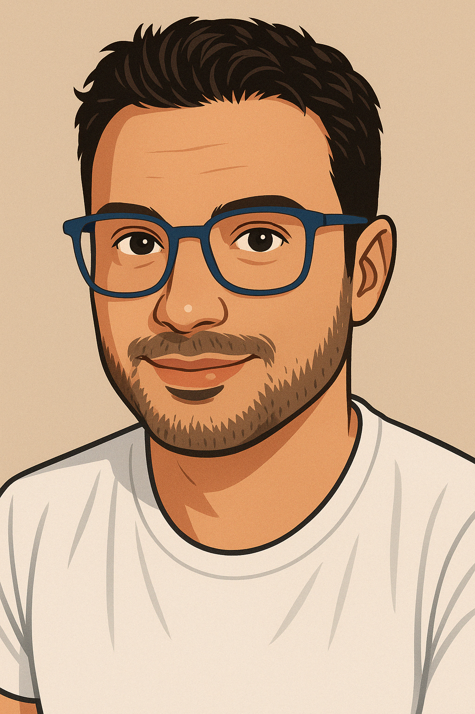

Blockchain security & distributed systems researcher designing and developing DApps, building and operating Hyperledger Besu (QBFT) networks with Blockscout and Faucet integration, and transforming these systems into hands‑on learning environments for students and professionals.
About
Expertise
PhD in Computer Networks — specializing in distributed systems, consensus mechanisms, and network security.
Project Manager for EU and national research projects, overseeing multidisciplinary teams and ensuring deliverables in blockchain, cybersecurity, and distributed systems.
Project ManagementTeaching Roles
University lecturer in Blockchain & Distributed Systems at UniWA and the University of Malta, contributing also as Principal Researcher in EU and national projects, and co‑author of the first open‑access Greek blockchain textbook (Kallipos editions).
Teaching & hands‑on workshops in Blockchain, P2P Networks, Cybersecurity, and DApp security labs.
Research Interests
- Zero‑knowledge proofs (ZKPs), verifiable credentials, oracles, protocol hardening
- Cybersecurity & regulatory resilience under DORA
- Blockchain infrastructure engineering: Besu QBFT network, Blockscout, Faucet, hardened validator ops
- Decentralized Autonomous Organizations (DAOs) — governance models, token voting, resilience and transparency frameworks
Professional Activities
- Professional Roles — Member of INATBA’s Academic Advisory Board; Associate Editor at Frontiers in Blockchain.
- Founder, Web3Edu Initiative — developing an educational and governance framework for decentralized learning communities.
Affiliations & collaborators
Recent Research Projects
Current Projects
TARDIS - Trustworthy and Resilient Decentralised Intelligence for Edge Systems
Horizon Europe program whose primary goal is to significantly ease the complexity and reduce the effort of building correct and efficient heterogeneous swarms.
Role Highlights:
- Role: Senior Researcher for NKUA
- Responsible for WP7: Implementation and Evaluation
- Coordinating the Use Cases and respective Deliverables
GENERA – Re-vitalising Energy Transition in Touristic Islands
LIFE EU program that assists public authorities in transforming the energy context of the European regions in order to facilitate a rapid transition to a decarbonized and sustainable economy.
Role Highlights:
- Role: Senior Researcher for UniWA
- Also performed project management duties during meetings, coordination and reporting
- Responsible for the design and development of a Web 3.0 strategy and a card‑based game to motivate users on the transition to green energy.
- Leading participant in meetings and dissemination actions
Completed Projects
FASTER - First responder Advanced technologies for Safe and efficienT Emergency Response
Horizon EU project examining the impact and role of first responders across the full emergency lifecycle—planning, logistics, maintenance/diagnostics, training, and management—to strengthen the EU’s ability to respond to emergencies.
Role Highlights:
- Role: Senior Researcher for UniWA
- Additionally contributed to project management tasks and coordination activities
- Delivered tools: MORSE (gesture recognition), RESCUE (encrypted BLE messaging when infrastructure is down), Smart Textiles (uniform sensors), K9 collar (rescue alerts)
- Focus: AI, safe communication, encryption, and mobile applications for first responders
Additional Projects
ARTEMIS – Secure Supply Chain Traceability Management
ESPA (Research – Innovate) project aiming to develop a distributed architecture, both in software and hardware, to secure supply chain traceability processes and data using blockchain, smart contracts, and embedded security mechanisms.
Role Highlights:
- Role: Senior Researcher for iTrack Services (SME)
- Also assisted with project management responsibilities and deliverable planning
- Participation in the design of the architecture and integration with the company’s platform
- Participation in meetings and preparation of deliverables
Personal Development Portfolio
Active Projects
Proof of Escape (PoE)
Gamified Web3 DApp for blockchain learning with quizzes and token rewards.
Role Highlights:
- Quizzes on blockchain topics
- Rewards in tokens
- Special reward: an NFT that can unlock the next level (when ready)
LDL Fantasy League DApp
Fantasy League management with SBT identity, multi‑team trades, and voting.
Role Highlights:
- Backend: Flask + Google Sheets API + PostgreSQL
- On‑chain: trade voting + SBT profiles
- DAO mechanism for league governance (voting on regulations & trade approvals)
Web3Edu Governance Framework
A governance architecture for decentralized educational ecosystems, combining SBT identity, DAO voting models, and optional ZKP‑based privacy.
Role Highlights:
- Design of modular governance models for community‑driven decision‑making
- Integration with SBT identity for transparent yet privacy‑aware participation
- ZKP experiments for anonymous voting and selective disclosure
Infrastructure & Research Tools
Besu QBFT Research Network
Private Hyperledger Besu (QBFT) Ethereum network for research on consensus, privacy, and operational resilience.
Role Highlights:
- Besu (v25.8.0) network with 5 validators, Blockscout explorer & Faucet
- Hardened nodes & monitoring (metrics, logs, alerts)
- Applied smart contracts: Soulbound Tokens, NFTs, ZKPs, oracles
Blockchain Security Labs
Hands-on labs on consensus mechanics, common attack patterns, and DeFi incident simulations inspired by the bZx oracle/flash-loan exploits.
Role Highlights:
- Oracle design and price‑feed defenses (TWAPs, circuit breakers)
- Incident walkthroughs & trace analysis (bZx‑style oracle/flash‑loan)
Open‑Source Resources
Web3 Sources (Curated Repository)
Curated collection of resources and learning materials for Web3, blockchain, and distributed systems.
Popular Publications
Blockchain
Cybersecurity
ML / AI
IoT
A few popular/representative publications are listed here. For the full list, please see my CV or Google Scholar.
Blockchain & Web3
A survey on information security threats and solutions for Machine to Machine (M2M) communications
G. Tuna, D.G. Kogias, V.C. Gungor, C. Gezer, E. Taşkın, E. Ayday
Journal of
Parallel and
Distributed Computing 109 (2017) 142–154
Application of blockchain technology in dynamic resource management of next generation networks
M. Xevgenis, D.G. Kogias, P. Karkazis, H.C. Leligou, C. Patrikakis
Information
11(12), 2020
IoT & Wireless Systems
Deep learning empowered wearable‑based behavior recognition for search and rescue dogs
P. Kasnesis, V. Doulgerakis, D. Uzunidis, D.G. Kogias, S.I. Funcia, M.B.
González, C.
Giannousis, C.Z. Patrikakis
Sensors 22(3), 2022, Article 993
Books & Educational Material
An introduction to blockchain (Greek Open-Access textbook)
P. Karkazis, D.G. Kogias, C. Patrikakis
Kallipos Editions, 2023 — ISBN: 978-618-5667-59-9 — DOI:
10.57713/kallipos-171
Teaching
Introductory course covering blockchain fundamentals, cybersecurity threats, consensus mechanisms, and the DORA regulatory framework — enriched with hands‑on labs, threat analysis exercises, and PoA/PoS network simulations.
A practical course on designing, developing, and securing Web3 DApps. Includes smart contract security, QBFT validator deployment, gas‑cost optimization, and full‑stack development with real blockchain infrastructure.
A deep dive into cybersecurity, auditing, and assurance methods for DLT systems, with emphasis on EU regulatory alignment (e.g., DORA), risk modelling, and secure sandbox‑based experimentation.
Contact

- Email: dimitris@kogias.eu
- GitHub: @DimiKog
- Scholar: Google Scholar
- LinkedIn: Profile